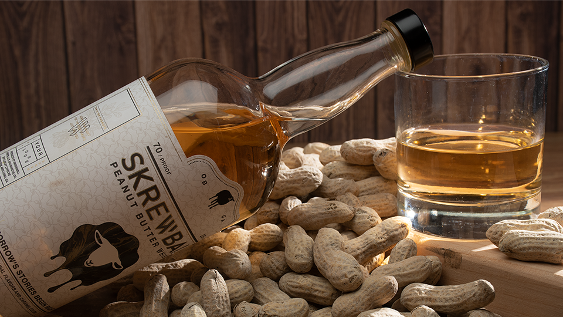

Classical Portrait Study
The goal of this project was to design, plan out, and shoot a photo of a product to be used for advertising. I chose to do my shoot with Screwball Whiskey, which features an interesting peanut butter flavor. I included a mountain of peanuts in the shot to try to sell that peanut butter flavor.
Outline & Process
Since the setup of this project was completely up to me, the layout of the shot and the lighting setup was entirely dependant on how I wanted the final piece to look. My vision was of a dusty old barn with sunlight pouring through the broken roof and walls at sunset. To accomplish this, I set the softbox over and in front of the spread to create a soft, even light, and added a bright snoot light behind the subject off to the right to really light up the rocks glass and bring that sunset concept to life.
Final Result
This project was a blast to work on. The original plan was to have an assistant ready in the wings to throw a small handful of dust over the subject spread during the shoot to add a dusty barn effect, but the dust fell too heavy and didn't look good. I added in a dusty effect in the top right corner in post and upped the contrast a little to add a bit more drama and wamrth to the piece.